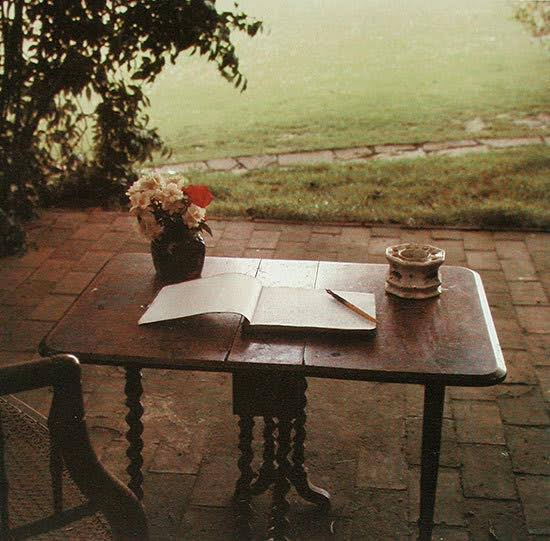
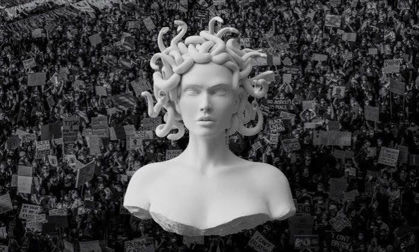
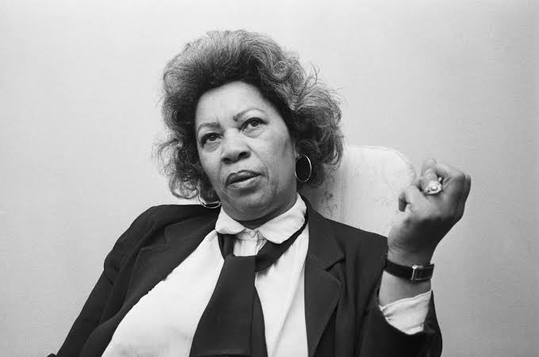

A History of Writing Outside the Lines
Women and the Literary Avant-Garde

Women have always played an important role in literary experimentation, even when their work has been overlooked or excluded from traditional literary histories. Across different periods, women writers have challenged conventions of storytelling, language, identity, and artistic expression.
During the early twentieth century, women participated in modernist and avant-garde movements that experimented with fragmented narratives, stream of consciousness, unusual structures, and unconventional approaches to language. Writers such as Virginia Woolf, Gertrude Stein, and H.D. helped expand the possibilities of literary form.
Feminism and Literary Recognition

By the late 1960s and 1970s, feminist movements began challenging the ways literature was studied, published, and remembered. Feminist literary criticism questioned why so many women writers had been excluded from the literary canon and brought renewed attention to their work.
Writers and critics began examining how literature represented women's experiences, sexuality, power, and identity. This period helped create space for more experimental and unconventional approaches to women's writing.
Contemporary Women and Experimental Writing

Contemporary women writers continue to challenge literary expectations. Their work often moves between fiction, poetry, memoir, criticism, and other creative forms. Many explore subjects such as the body, sexuality, loneliness, violence, obsession, and the uncomfortable aspects of everyday life.
Rather than following traditional narrative structures, some writers use fragmented storytelling, dark humor, unreliable narrators, and experimental language. Their work creates space for experiences that are complicated, contradictory, strange, and difficult to categorize.
Recurring Themes in Experimental Women's Writing
Although these writers have very different styles, several themes connect their work:
- Female identity, sexuality, and the body
- Alienation, loneliness, and social isolation
- Anger, desire, obsession, and power
- Unconventional narratives and fragmented storytelling
- Dark humor, grotesque imagery, and the uncanny
- Challenging traditional ideas of femininity
Further Reading
Explore these resources to learn more about women writers and the history of experimental literature.